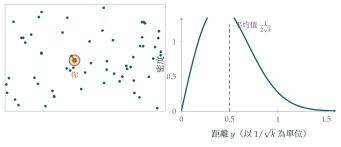

STEP II 2012，第 13 題
繼續之前，請先閱讀題目（原題為英文）。題目載於 STEP Support Programme 的題目資料庫： step.maths.org/questions/12-s2-q13
引子
假如超級市場、樹木、恆星或流動電話發射站「隨機」散佈在某個區域內，你要走多遠才到達最近的一個？答案只取決於密度 \(k\)（每單位面積的平均數目），而且有一個獨特的形狀，就是瑞利分佈（Rayleigh distribution）。平均而言，最近的一個位於距離 \(\frac{1}{2\sqrt k}\) 處：若每平方公里有一間超級市場，這距離就是 \(500\) 米。
這個模型稱為空間泊松過程（spatial Poisson process），即時間上隨機到達（第 12.18 節）的二維版本。計算過程簡短而優美，但它真正的價值在於充當基準：生態學家把實際的最近鄰距離與這條公式比較，以判斷樹木或鳥巢究竟是聚集成羣、隨機散佈，還是刻意彼此隔開。
動筆之前
一個平均值為 \(\mu\) 的泊松隨機變量（Poisson random variable），取值 \(0\) 的概率是多少？
\(\mathrm{P}(0) = e^{-\mu}\)。半徑為 \(y\) 的圓面積是 \(\pi y^2\)，所以圓內超級市場數目的平均值為 \(k\pi y^2\)。
逐步解題
階段 1 附近沒有超級市場
在距離 \(y\) 以內沒有超級市場的概率是 \(e^{-\pi ky^2}\)。
階段 2 最近距離的分佈
\(Y \geq y\) 表示在距離 \(y\) 以內沒有超級市場。那麼 \(\mathrm{P}(Y < y)\) 是甚麼？
\(\mathrm{P}(Y < y) = 1 - e^{-\pi ky^2}\)，求導後便得到密度函數（density） \[\mathrm{f}(y) = 2\pi kye^{-\pi ky^2}, \qquad y \geq 0. \qed\]
階段 3 平均值
可以用分部積分法（integration by parts）計算 \(y\,\mathrm{f}(y)\) 的積分，也可以利用 \(\mathrm{E}(Y) = \int_0^\infty\mathrm{P}(Y > y)\,\mathrm{d}y\)。然後作代換，以便使用題目給出的高斯積分（Gaussian integral）。
\[\mathrm{E}(Y) = \int_0^\infty e^{-\pi ky^2}\,\mathrm{d}y.\] 代入 \(x = y\sqrt{2\pi k}\)，使得 \(\pi ky^2 = \frac12x^2\)，便得 \(\mathrm{E}(Y) = \frac{1}{\sqrt{2\pi k}}\sqrt{\frac\pi2} = \frac{1}{2\sqrt k}\)。■
階段 4 方差
\[\mathrm{E}(Y^2) = \int_0^\infty y^2\cdot2\pi kye^{-\pi ky^2}\,\mathrm{d}y.\] 代入 \(u = \pi ky^2\)（因此 \(\mathrm{d}u = 2\pi ky\,\mathrm{d}y\)），上式變成 \(\int_0^\infty\frac{u}{\pi k}e^{-u}\,\mathrm{d}u = \frac{1}{\pi k}\)。因此 \[\mathrm{Var}(Y) = \frac{1}{\pi k} - \frac{1}{4k} = \frac{4 - \pi}{4\pi k}. \qed\]

回顧
把距離問題化為計數問題。「最近的一個比 \(y\) 更遠」就是「在 \(y\) 以內一個也沒有」。
先求累積分佈，再求密度。\(\mathrm{P}(Y < y)\) 可以直接寫出；求導後便得到密度函數。
以代換化為已知積分。每個矩（moment）都化成了高斯積分或指數積分。
背後的數學
平面上的泊松過程
強度（intensity）為 \(k\) 的空間泊松過程，是一種隨機散佈的點集，滿足：互不相交的區域內的點數彼此獨立，而面積為 \(A\) 的區域內的點數服從平均值為 \(kA\) 的泊松分佈。把極大量的點獨立而均勻地投放到一片極大的區域上，並保持適當的平均密度，得到的就是這種過程：這正是「稀有事件定律」（law of rare events），它同樣解釋了錯排（derangement）的現象（第 9.8 節）。它是完全空間隨機性（complete spatial randomness）的自然模型，實際的分佈形態都以它為比較標準。Clark–Evans 檢驗（Clark–Evans test）由兩位生態學家於 1954 年提出，把觀察所得的平均最近鄰距離與 \(\frac{1}{2\sqrt k}\) 比較：小得多表示有聚集現象（種子落在母樹附近），大得多則表示間隔規則（有領域行為的鳥類，或植物之間爭奪水分）。
三維的情況
在三維空間中作同樣的計算，可得到最近的恆星、分子或星系的距離滿足 \(\mathrm{P}(Y > y) = e^{-\frac43\pi ky^3}\)。錢德拉塞卡（Subrahmanyan Chandrasekhar）在 1943 年用它來研究一顆恆星受隨機分佈的鄰近恆星所施的引力，物理學家則用它來計算氣體分子的平均自由程（mean free path）。
密度函數 \(\frac{y}{\sigma^2}e^{-y^2/(2\sigma^2)}\) 以瑞利勳爵（Lord Rayleigh）命名，他在 1880 年研究聲學理論時遇上它：它描述了許多相位隨機的波疊加後的振幅。若一點的兩個坐標是獨立的正態隨機變量（normal random variable），它也給出該點與原點距離的分佈，這是理解它為何在這裏出現的另一個角度（練習 3）。今天，它用來模擬流動電話訊號的衰落，因為訊號是沿着許多相位隨機的路徑到達接收器的。
思維技巧
要求最小值、最大值或最近距離的分佈時，\(\mathrm{P}(Y > y)\) 往往很容易直接寫出。求導便得到密度函數。
這個方法會在 第 12.25 節 再次出現，用來處理許多隨機壽命中最長的一個。在大學裏，這是處理任何「順序統計量」（order statistic）的標準第一步。
延伸練習
中位數。求到最近超級市場的距離的中位數（median），並與平均值比較。
第二近的。求到第二近的超級市場的距離的分佈。（提示：\(\mathrm{P}(Y_2 > y)\) 是在 \(y\) 以內最多只有一間超級市場的概率。）
正態坐標。若 \(U\) 和 \(V\) 是獨立的 \(\mathrm{N}(0, \sigma^2)\) 隨機變量，證明 \(\sqrt{U^2 + V^2}\) 的密度函數為 \(\frac{r}{\sigma^2}e^{-r^2/(2\sigma^2)}\)。\(\sigma\) 取何值時會得到超級市場的分佈？
Clark–Evans。在一項調查中，一片面積 \(1\) km\(^2\) 的樹林內有 \(400\) 棵樹，而一棵樹到其最近鄰的平均距離為 \(35\) m。這與完全空間隨機性相符嗎？還是顯示有聚集或間隔的現象？
延伸閱讀
Peter Diggle, Statistical Analysis of Spatial Point Patterns（Arnold）。這方面的標準參考書，載有 Clark–Evans 檢驗及其後續發展的方法。
John Kingman, Poisson Processes（Oxford University Press）。一本優美的短篇著作，討論任意維數的泊松過程。
Geoffrey Grimmett & David Stirzaker, Probability and Random Processes（Oxford University Press），論泊松過程的一章。